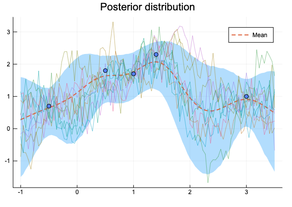
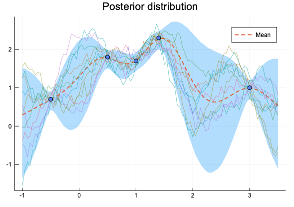
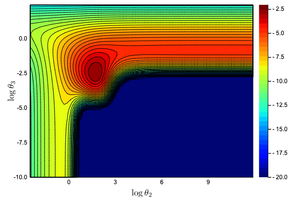
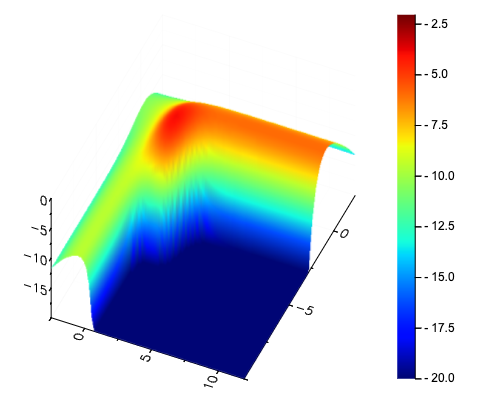

引き続き「ガウス過程と機械学習(第二刷)」を読み進めJuliaで実装している。
ハイパーパラメーターの最適化(勾配を使わず、Optim.jlの optimize を使ってしまった)のところまで読み進めた。
- 3.4.2のガウス過程回帰の計算を行う際、予測分布の分散共分散行列が計算誤差の影響で対称行列にならずエラーが発生することがあったので、場合によっては対称化が必要。
- 図3.16のガウスカーネル
\( \begin{aligned} k(x, x^\prime) = \theta_1 \exp \left( - \frac{|x-x^\prime|^2}{\theta_2} \right) \end{aligned} \) のパラメーター推定で、\( (\theta_1, \theta_2, \theta_3)=(1, 0.4, 0.1) \) とすると下のようになり本と違ってしまった。

\( (\theta_1, \theta_2, \theta_3)=(1, 0.4, 0.01) \) とすると近い図になる(全く同じには見えない)

- 尤度の計算が合わなかった。尤度を図示した図3.16で-5未満を切り捨てるとうまくいかなかった。20以下を切り捨てると近い図になった。


本文の局所解(ii)に該当する点の尤度は-2.0299となり本文の-1.934とは違ってしまった。
図3.20のパラメーター推定は正しくできたが、こちらも対数尤度が違ってしまった((a):本文-1.788、実装-1.738, (b):本文-2.174, 実装-2.5029) 詳細は下のレポジトリ、ノートブックを見て下さい。更新は下のMedium用のブランチではなく、masterの方に行う予定です。
https://github.com/matsueushi/gp_and_mlp/tree/blog-2019-05-19
https://nbviewer.jupyter.org/github/matsueushi/gp_and_mlp/blob/blog-2019-05-19/gp.ipynb